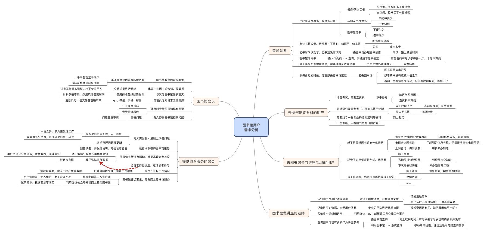

需求分析

在对图书馆用户进行调研后，将图书馆用户按照：“涉及用户——感兴趣的场景——现有解决方案——痛点”
的思考方式穷举出用户的一下场景以及各场景中遇到的问题
通过对下图的分析，图书馆的用户主要集中在图书馆管理人员及读者之间，主要以读者为主（图书馆管理人员为读者提供服务）。
从图书馆管理人员的角度来看，需求更多的集中于需要对图书馆的管理并满足相应的政策要求（公共图书馆法提及到的读者服务及电子资源）。
从读者的使用角度分析，需求更多的集中于图书馆服务的移动化，一些消息及活动通知，在线查书、续借等功能。实际分析时，并没有找到电子资源的吸引力。从用户需求的角度来看，用户只是需要一个简单的图书馆移动端服务工具而已。
而从公司的业务需求方向考虑，出于公司业务的开展（更好的卖资源），需将公司优势的电子资源添加至功能之中